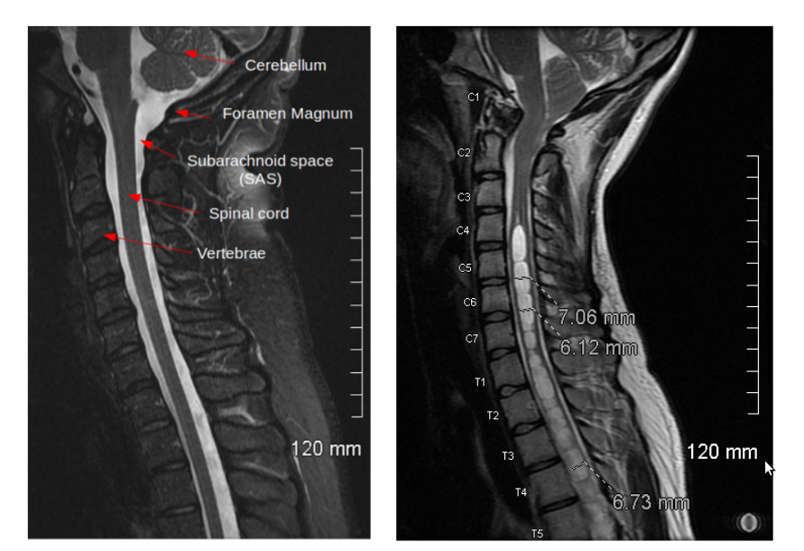
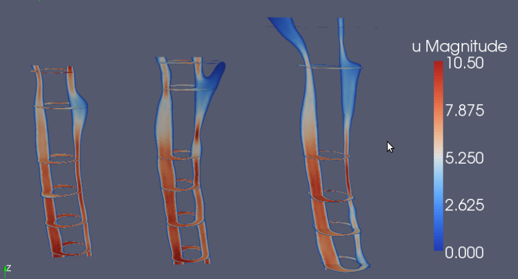
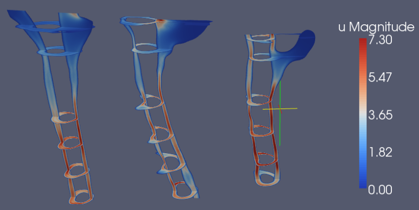

This article briefly describes the results of a FEniCS and VMTK based study of the flow of cerebrospinal fluid in the spinal canal in patients with the Chiari I malformation. The study is published in the prestigious journal AJNR, see [1].
The Chiari I malformation (see Figure 1) is a malformation of the brain (or maybe skull), characterized by a downward displacement of the lower part of the brain that may even be outside the skull. Around 1% of the population have this condition and the symptoms vary from occasional headache to chronic pain and paralysis. The reasons for the symptoms are believed to be associated with the flow of cerebrospinal fluid in and out of the head that occurs as the brain expands and shrinks to accommodate the blood pulsating in and out of the brain during a heart cycle. The Chiari I malformation is often associated with syringomyelia (50%), a condition where cavities of fluid form and grow within the spinal cord, destroying the tissue of the spinal cord in the process. Recent findings demonstrate that CSF flow in Chiari patients is different from normals, see [2].
Figure 1: The left image shows a sagital MR image of a healthy individual, while the right image shows a person with the Chiari I malformation (Cerebellum occupying the subarachnoid space close to C1/Foramen Magnum) and syringomyelia (white cysts within the spinal cord).
In the current study, computational meshes from 12 individuals were created using VMTK , a toolkit for generating finite element meshes from medical images. VMTK has recently been extended with tools for marking boundary conditions and subdomains and exporting these to the DOLFIN mesh format directly. The CFD simulation tools are based on nsbench described in Chapter 21 in the FEniCS book. See the thesis of Gabriela Rutkowska for more details. Figure 2 and 3 show some simulation results, illustrating that CSF velocities are significantly higher in Chiari patients than in healthy or post-operative individuals.
Figure 2: Peak systolic velocity magnitude in three Chiari patients.
Figure 3: Peak systolic velocity magnitude in one volunteer (left) and two postoperative patients with signs of tonsils at Foramen magnum.
Optimal treatment of Chiari patients and the development of syringomyelia has to date been a puzzle for clinicians. Only recently it has been discovered that CSF velocities in Chiari I patients differ significantly from normals, using modern PC-MR techniques. From an engineering perspective, the increased velocities in Chiari patients suggest increased or focused pressure gradients and stress, or decreased resistance, which results in damage of the central nervous system in the spinal cord. Using the VMTK+FEniCS pipeline from medical images to CFD computations of velocity, pressure and stress of the cerebrospinal fluid, we may be on the right track to solve the 100 year old enigma of this condition described by Hans Chiari. For more info about this condition we refer to the COH and CSF foundations.